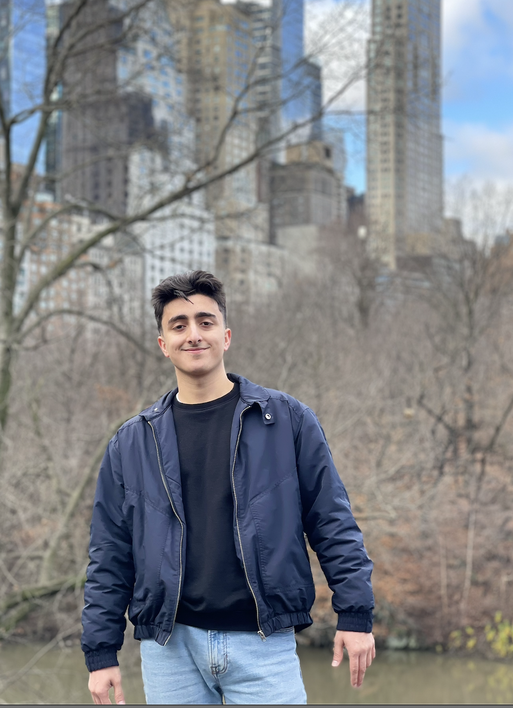
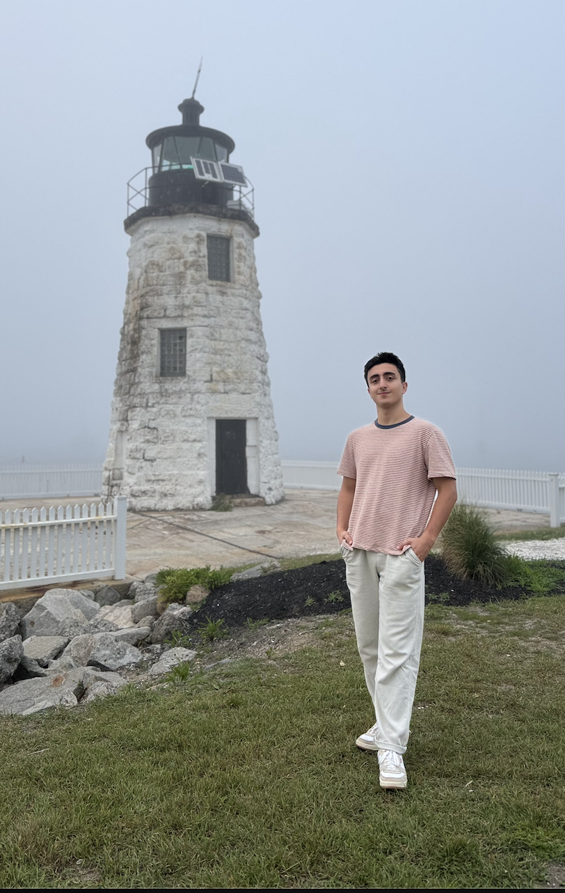

About Me
My name is Ravan Tarlanov, and I am a Computer Science student at the University of New Haven with a strong interest in technology, problem-solving, and building practical solutions. Over the past two years, I have worked on projects ranging from coding assignments in Python, Java, and C++ to hands-on hardware repair and embedded systems using Arduino. Beyond academics, I am also passionate about entrepreneurship. I enjoy tackling challenges that combine creativity with technical skill, and I am always looking for opportunities to grow, learn, and apply my knowledge in real-world situations.